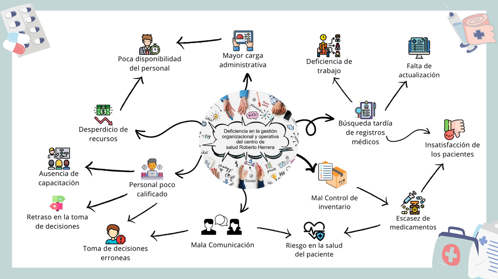

Generalidades del Centro de Salud Roberto Herrera Ríos (Distrito 1)
CENTRO DE SALUD
SILAIS - MANAGUA
Región/departamento - Managua
Municipio - Managua
Distrito - (Distrito 1)
Localidad - De Transnica, 2c. al Lago, Reparto Serrato, Reparto Serrano
Zona - Urbano
Figura Rica

Descripción del Proyecto
Aquí puedes escribir una breve descripción de tu proyecto y el sistema de gestión organizacional implementado en el Centro de Salud Roberto Herrera Ríos.